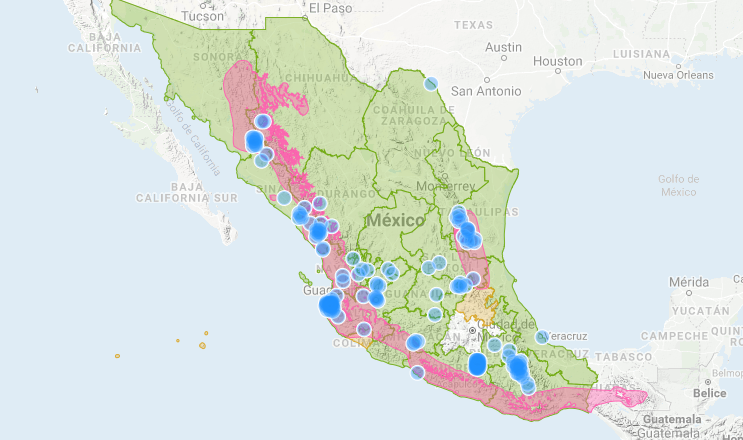
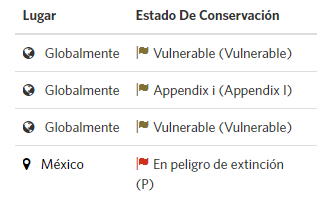

Descripción
La especie presenta algunas plumas a manera de 5 a 6 bandas de color rojo carmesí y la piel del rostro es de color rosado claro.
Es un ave grande, mide entre 675 y 750 mm lo que la hace ocupar el sexto lugar en tamaño dentro del género Ara. Presenta color verde, tono mate en la nuca, cuello y corona. Las
plumas cobertoras y secundarias de las alas presentan un color verde olivo oscuro; frente y mejillas color rojo carmesí, la rabadilla y coberteras de la cola presentan color azul
turquesa. El pico es negro mate y el iris es color amarillo, patas y dedos color gris oscuro. Los juveniles son similares, excepto por las plumas escapulares o cobertoras del ala
con borde distal color verde pálido y las plumas de la garganta con tono café, el iris va de color amarillo pálido a café claro.
Hábitat
Se asocia principalmente a selvas bajas y medianas subcaducifolias, así como a selvas medianas subperennifolias, las cuales se extienden en parte para la planicie costera del Golfo,
las planicies y Sierras del Noroeste, la planicie costera del Pacifico y la Sierra Madre del Sur. También se le observa en hábitats semiáridos y visita zonas de transición con
vegetación templada de pino-encino en la vertiente del Pacífico en México.

Situación actual

Chordata: Son un filo del reino animal caracterizado por la presencia de una cuerda dorsal o notocorda. Psittaciformes: Son un orden de aves que incluye aproximadamente 86 géneros con 372 especies que se encuentran principalmente en las zonas tropicales y subtropicales. Psittacidae: Son una familia de aves psitaciformes llamadas comúnmente loros o papagayos, que incluye a los guacamayos, las cotorras y formas afines de América y África.
 Aves en peligro de extinción
Aves en peligro de extinción